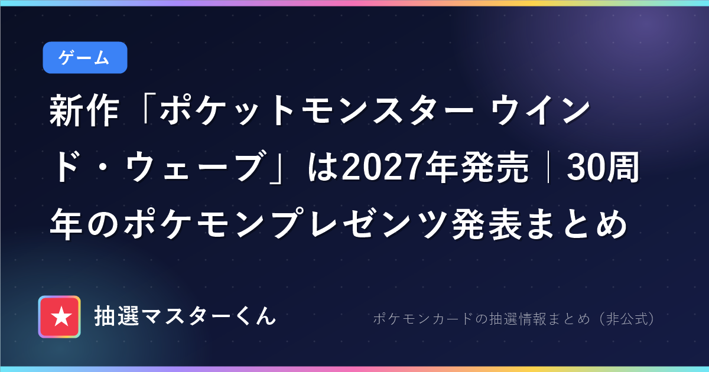

新作「ポケットモンスター ウインド・ウェーブ」は2027年発売｜30周年のポケモンプレゼンツ発表まとめ

この記事の要点
- シリーズ最新作「ポケットモンスター ウインド・ウェーブ」が発表。2027年発売、Nintendo Switch 2向け
- 新しい御三家はハブロウ・ポムケン・ミオリー
- 対戦ゲーム「ポケモンチャンピオンズ」はSwitch版が2026年4月に配信
- ポケモンカードゲームの30周年記念商品の世界同時発売も発表された
2026年2月27日、初代『ポケットモンスター 赤・緑』の発売から30年を迎えたことを記念した「ポケモンプレゼンツ」が配信されました。発表の中から、主なものをまとめます。
最新作「ポケットモンスター ウインド・ウェーブ」
- 発売時期：2027年（具体的な日付は未発表）
- 対応機種：Nintendo Switch 2
- 新しい御三家：ハブロウ、ポムケン、ミオリー
- 特別なピカチュウ：「カゼピカくん」と「ナミピカちゃん」も紹介されました
「ウインド（風）」と「ウェーブ（波）」の2バージョンという、シリーズおなじみの形です。公式サイトも公開されています。発売日などの続報が出たら、この記事に追記します。
公式トレーラー
配信の全編は「Pokémon Presents 2026.2.27」（ポケモン公式YouTubeチャンネル）で見られます。
動画は公式YouTubeチャンネルの埋め込み機能で表示しています。
そのほかの主な発表
- ポケモンチャンピオンズ：Nintendo Switch版は2026年4月に配信。スマートフォン版は夏の予定と発表されました
- Pokémon LEGENDS Z-A：「メガガブリアスZ」が登場。HOMEとの連携も案内されました
- ワールドチャンピオンシップス2026：2026年8月にサンフランシスコで開催
- ポケモンカードゲーム：30周年記念商品を2026年に世界同時発売（のちに「30th CELEBRATION」として9月16日に発売）
- 『ポケモンXD 闇の旋風ダーク・ルギア』：ゲームキューブ Nintendo Classicsに追加
ポケカとのつながり
ゲームで登場した「Z」の付くメガシンカは、ポケモンカードにも登場しています。2026年11月27日発売の拡張パック「ハドウシーカー」には、メガルカリオZexやメガガブリアスZexが収録されます。ゲームとカードを行き来して楽しめるのも、ポケモンならではですね。
出典
当サイトは非公式のファンサイトです。価格・日程などは記事公開時点の情報なので、最新の情報は公式サイトや各販売店でご確認ください。